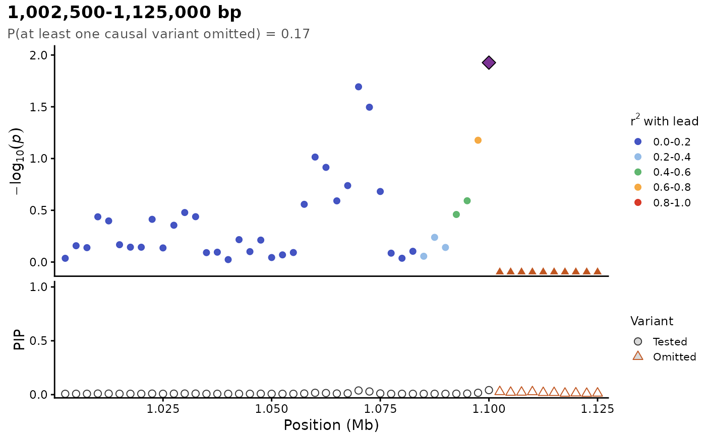

Draws stacked, position-aligned panels for one locus:
Usage
susieout_locuszoom(
fit,
positions = NULL,
genes = NULL,
chrom = NULL,
lead = NULL,
ld = TRUE,
coverage = 0.95,
min_probability = 0.5,
title = NULL
)Arguments
- fit
A
susieout_fitfromsusieout_fit().- positions
Base-pair positions for every tested and omitted variant, either a numeric vector named by variant ID or a data frame with columns
variant_idandposition. IfNULL, positions are parsed from IDs of the formchr1:12345:A:Gorchr1-12345-A-G; if that is not possible variants are placed by their order and a message is shown.- genes
Optional data frame of genes with columns
gene_name,startandend, and optionallychrom. Genes outside the plotted range are dropped. Requires genomic positions.- chrom
Chromosome of the locus (for example
"chr1"), used to select genes and in the title. Needed whengeneshas several chromosomes andpositionswas supplied explicitly; otherwise inferred from variant IDs.- lead
ID of the tested variant that anchors the \(r^2\) colouring. Defaults to the tested variant with the largest
|z|.- ld
If
FALSE, skip LD colouring and draw all tested variants in one colour.- coverage
Credible-set coverage passed to
susieout_credible_sets().- min_probability
Minimum probability that a single-effect component is non-null for its credible set to be shown. Components without non-null support yield large, uninformative sets that would otherwise colour most of the locus.
- title
Optional plot title. Defaults to the locus range when positions are genomic.
Details
Association. Tested variants at their position, with \(-\log_{10} p\) computed from the z score and colour showing the squared correlation (\(r^2\)) with the lead variant, as in LocusZoom. Omitted candidate variants have no z score; ticks below the axis mark where they lie.
Posterior inclusion probability. The PIP of every tested (circle) and omitted (triangle) variant, filled by the 95% credible set that contains it.
Genes (optional), when
genesis supplied.
The subtitle reports the posterior probability that at least one causal variant was omitted from the tested set.
Requires the suggested packages ggplot2 and cowplot; ggrastr is used to rasterize large point layers when available.
See also
plot.susieout_fit() calls this function by default.
Examples
if (requireNamespace("ggplot2", quietly = TRUE) &&
requireNamespace("cowplot", quietly = TRUE)) {
locus <- susieout_simulate_locus(1, architecture = "entirely_omitted")
fit <- susieout_fit(
locus$z, locus$n, locus$R_analysis, locus$wgs_ld,
locus$examined_ids
)
# Simulated loci have no coordinates; supply them for a genomic axis.
ids <- c(fit$examined_ids, fit$excluded_ids)
positions <- stats::setNames(1e6 + 2500 * seq_along(ids), ids)
susieout_locuszoom(fit, positions = positions)
}
